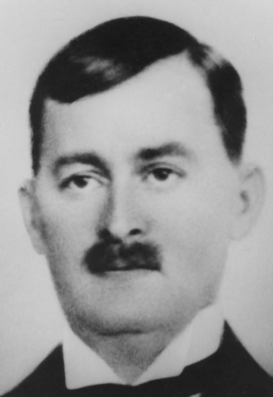
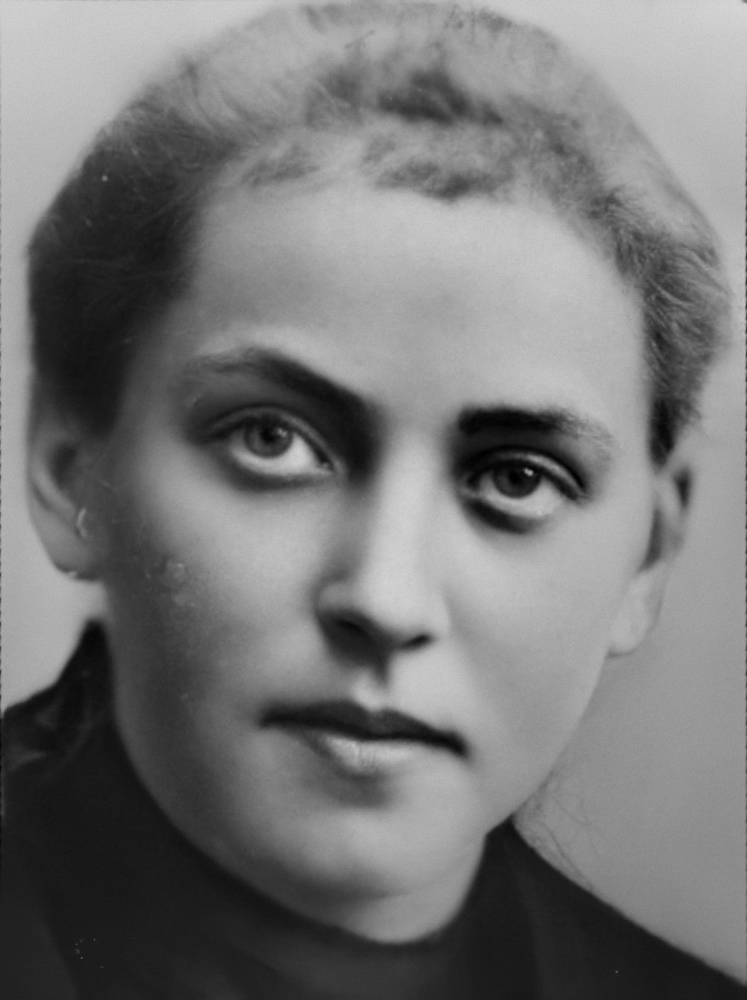

Född 17 aug 1922 på Knäppingsborgsgatan 14-16, Gård 2, Kv Eken, Östantill, Norrköping, Norrköpings Hedvig (E) 1 .
Död 8 jan 1997 på Reenstiernagatan 34, Gård 7, Kv Gården, Enebymo, Norrköping, Norrköpings Östra Eneby (E) 2 .

F John Hugo Backau.
Född 15 feb 1881 i Trädgårdsgatan 28, Kv Bakugnen, Östantill, Norrköping, Norrköpings Hedvig (E) 3 4 .
Död 7 maj 1932 på Värmlandsgatan 56, Gård 18, Kv Spinnmästaren, Marielund, Norrköping, Norrköpings Östra Eneby (E) 5 .
Född 16 feb 1855 i Gustafsberg, Himmelstadlund, Norrköpings Östra Eneby (E) 6 .
Död 3 jun 1934 i Torshag, Kvillinge (E) 7 .
FMF Karl Peter Danielsson.
Född 24 feb 1819 i Lilla Kärrsund, Södra sockenmarken, Vreta Kloster (E) 8 .
Död 10 maj 1857 i Simonstorp, Ingelstad Mo, Ingelstad, Norrköpings Östra Eneby (E) 9 .
FMM Maja Stina Jakobsdotter.
Född 16 sep 1823 i Bäckebo, Lotorps bruk, Risinge (E) 10 .
Död 14 jun 1866 i Källhagen, Marieborg, Norrköpings Östra Eneby (E) 11 .

M Hilda Josefina Backau f Karlsson.
Född 12 feb 1882 i Skarsätter, Svärtinge Gård, Norrköpings Östra Eneby (E) 12 .
Död 30 dec 1948 på Högalund 29, 545, Högalund, Ektorp, Norrköping, Norrköpings Sankt Johannes (E) 13 .
Född 13 mar 1836 i Falla, Falla, Hällestad (E) 14 .
Död 5 aug 1905 i Nytorp, Svärtinge Gård, Norrköpings Östra Eneby (E) 15 16 .
MFF Karl Magnus Svensson.
Född 18 apr 1807 i Södra Bäck, Bäck, Ekeby (E) 17 .
Död 2 okt 1898 i Fattighuset, Risinge (E) 18 .
MFM Anna Hansdotter.
Född 15 okt 1812 i Lilla Axhult, Axhult, Stjärnorp (E) 19 .
Död 25 aug 1883 i Ramstorp Nedergård, Ramstorp, Risinge (E) 20 .
Född 24 aug 1836 i Fjärdingstorp, Regna (E) 21 .
Död 18 mar 1917 i Markebo, Svärtinge Gård, Norrköpings Östra Eneby (E) 22 .
MMF Olof Månsson.
Född 15 dec 1800 i Ralstorp, Regna (E) 23 .
Död 4 jan 1858 i Gulltorp, Svarttorp, Regna (E) 24 .
MMM Kristina Persdotter.
Född 18 sep 1801 i Kattala, Regna (E) 25 .
Död 23 jan 1884 i Gulltorp, Svarttorp, Regna (E) 26 .
 Född
26 feb 1952
i Norrköpings Borg (E)
Född
26 feb 1952
i Norrköpings Borg (E)